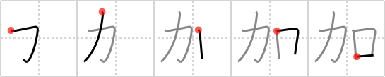

加
← →
add

Reading:
On-Yomi: カ — Kun-Yomi: くわ.える、くわ.わる
Heisig story:
Muscles . . . mouth. This is the only case in which the primitive for muscle appears on the left; note should be taken of the fact in composing one's story.
Koohii stories:
1) [bigspenderJ] 29-3-2007(374): If you eat anymore, you will be adding more カロries. (katakana karo).
2) [ayoung24] 5-10-2006(127): This is Power Mouth, the most annoying neighbour in the world who always has something to add.
3) [SammyB] 3-8-2008(80): To add muscle mass it's important to put protein in your mouth after working out.
4) [krungthep] 6-7-2008(21): Some tenis players seem to think that they can add power to their shots by opening their mouths and groaning as they hit the ball.
5) [meredithcat] 3-8-2010(14): To add muscles, add some calories (カロリー) to your mouth.